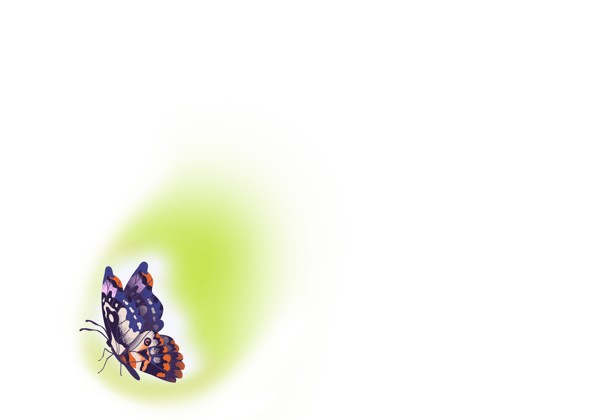

Episode 1
Mandy
When your comfort zone disappears, where do you go next?
Danielle travels to Tampa, Florida to meet with Mandy Harvey, a musician making everyone stop and listen. Having traveled the world on tour, and with her fifth album underway, Mandy tells Danielle about the innovation and determination it took to find musical success. Mandy’s story is all about creating the life you want, even when the path ahead of you disappears.
Meet the People
We’re all taught a story has three parts.
But life just isn’t that linear.
What happens when the
middle
is just the beginning?
I’m Danielle Prescod. This is
a Vox Creative production with Straight Talk Wireless.
Every great story has that one specific moment:
A call to adventure.
A push for more.
One moment that changes everything.
I’ve had a few of those moments - but my most recent one came in 2020.
I was living in New York City working in fashion and entertainment - I had one of those jobs that, to quote an iconic movie,
“a million girls would kill for.”
But under the glossiness,
I was living in a high pressure,
deeply unhealthy world.
And it was clear that something needed to change.
So I blew up my life.I quitmy job.I moved to New Orleans.
I wrote a memoir, and now, my work revolves less around accessories, and more around confronting the fashion industry’s relationship to white supremacy.
And now, I’m here to introduce you to six people who have all experienced
life-altering
breakpoints
what our crew has come to call a
“More Than This”
moment.
Episode 1
Act 1
It all starts in the Sunshine State
On a hot
and humid
summer day.
Danielle
Oh, the door’s kind of open.
Mandy
It’s good to see you in the flesh!
Danielle
Yes, you too!
The More Than This team rolled up to the home of Mandy Harvey, tucked into a gated community just outside of Tampa, Florida.
Danielle
Are you good at decor? Cause you really have set this hall up so nice.
Mandy
Oh, we did a lot of it ourselves. Reall
Danielle
Really?
Mandy
This actually was a formal dining room. I laid the floor.
Danielle
You laid the floor?! Have you ever done that before?
Mandy
Of course. It’s all part of the magic.
The day before, we met Mandy’s Dad, Joe, in North Florida. Joe Harvey is the epitome of an adoring father. As soon as I walked in the door, he handed me a professionally bound book that he’d written about Mandy’s life on tour.
Joe
As you guys probably know, I was Mandy's road manager before the whole COVID thing hit. And so for about almost two years, we had a rule everywhere she goes, I go. And so I would arrange all of our travel, I'd arrange our meals, and I would be the contact person for all the venues.
Over the past few years, Mandy got kind of famous... In 2017, she got fourth place on America’s Got Talent - or AGT, as she calls it. During her audition, Simon Cowell, – the famously brutal judge, – gave her the Golden Buzzer, a button each judge can press only once per season that guarantees that performer’s spot in the live shows.
It’s a big deal when it happens - cheering, crying, gold confetti raining from the ceiling -... the works.
45 million views on YouTube later, and here’s where Mandy is today.
Mandy
Right now, I'm finishing up my fifth album, my studio album. It's going to be called Paper Cuts. And it's life lessons and things that I've experienced over the last year and a half. And it's the first album that is just really personal…. I know that my last couple of years, you know, like, I've finally started to really come into myself and love myself, and see the world differently. And so, I wanted to be able to have an album where I didn't, I didn't think, "Oh, I want to make sure that this sounds good for somebody else." I just want to express. I am more proud of this album than pretty much any body of work I've done so far.
Danielle
I can’t wait to hear it.
Mandy
Yeah, I’m excited.
And that voice is magical. Mandy has this flutey, soprano that’s almost nymph-like, – she’s got this subtle vibrato that stands out with her stripped-down, acoustic sound. In concerts, she often performs with just a ukulele.
Joe
I caught myself still being amazed, still trying to figure out, how does she do it? When she describes feeling vibrations at various places in her throat; when she describes how you feel some notes in your, in your nasal cavity and some notes in your chest; when she describes the different things that she's done in order to learn how to stay on pitch and, and to trust her pitch and things like that, it— there was, there was a sense in which it was kind of a genie that escaped from a bottle. And you were always wondering if it was going to go back in, you know? And I found myself, when we were at a concert, I would be almost holding my breath going, you know, I don't want this to be the day that it doesn't work, you know? And it — and as time passed, and I began to realize, especially as I traveled with her, I realized actually how extraordinary her talent is.
So, at this point, you may have picked up on the fact that there’s maybe something different about Mandy. There is. She has a beautiful voice and an intense connection to music, ...but she can’t hear any of it. When she was 18, she lost her hearing.
Danielle
Okay, so the first thing is, speaking about the physical experience of your hearing going in and out when you were a child, like, when did you even notice that, and what did it feel like?
Mandy
You know, you—have you ever done those silly childhood, like, audiology things, you know, where the person comes to your school, and then you put those little hard headphones that squeeze your head really tightly, and then there's a beep, and you have to raise your hand as to what side and what ear the noise is coming into? I've never passed one of those tests in my life. It was always there. It was always obvious.
Mandy
I mean, that was something that I never really could hide from. But I had constant surgeries and constant problems with my eardrum stopping vibrating and, and chunks of time without any sound at all. So it was not anything that was really a secret.
Danielle
But it kind of always came back.
Mandy
Yeah. I mean, it, it always came back, but it was always, it was always broken.
But Mandy didn’t let her off-and-on hearing issues stop her from pursuing her passion. She started singing when she was four years old. And even as her hearing got weaker, her voice was only getting
stronger.
Joe
She loved to sing, she would be involved in church choirs and things like that. But it wasn't till she got to high school that all of a sudden, all of us around her started thinking, holy cow, this, this young lady has an outstanding talent, you know? And it's hard when it's your own family, right? Because people say, "Wow, listen to Mandy's voice." And in our family, we would always say, "She just sounds like Mandy to us," you know?
Even though hearing issues loomed, that wasn’t her biggest obstacle at the time.
Joe
She was very introverted. Always, as a kid. Very quiet. She wanted to be in the back row. And she wanted to be part of a team and to blend in. So, if you had said to me when she was in middle school, high school, "Oh, your daughter's going to be a performer," especially on stage, I would have said, "Nah, that'll never happen.”
While Mandy was trying to blend in, she honed a unique skill:
lip reading.
It feels like an understatement to call this a skill. After we recorded this interview, the More Than This team piled back into the car, which is when it hit us all at the same time:...
“Wait, she couldn’t hear us
that
whole time.”
We had been talking to her with no translator and no visual aids for hours. And yet she carried on an ongoing conversation with four people seamlessly. I got back to my hotel room that night and tried lip reading with my TV on mute.
I failed
Miserably :(
Mandy
What I used to do more often than anything is kind of tell kids what they were getting for Christmas. So they would pay me for it. I had a hustle. [laughs] I mean, like, somebody would be talking, and I would, you know—we'd have like, a, like, a church gathering or something like that. And they'd be talking about doing this or that. And I'd be like, looking into a conversation. I was like, "You want to know what you're getting for Christmas? They're talking about it right now." And they're like, "Yeah!" And I was like—
Danielle
How much would they pay you?!
Mandy
Like a quarter. You could have paid me in worms, that would have been fine. It was just more of like the, I have the advantage, which I'd never had. And so, when I had it from time to time, it just made me feel good.
After graduating high school, Mandy went to get her degree in music education. Her dream was to be a choral professor. At this point, Mandy still struggled with her hearing from time to time.
But then, ...unexpectedly
Mandy’s world went silent.
Episode 1
Act 2
Joe
I underestimated at first what was going on, because I thought, this is just another ear infection, another, you know, another come-and-go experience. And of course, it didn't turn out to be that way.
Danielle
When did you realize that it might be more serious than that, because it had been extensively happening for so long?
Joe
My wife, Valerie, called me at work one day, and she said, "You need to go talk to Mandy. Something is really wrong." And so, I rode up, drove up and Mandy met me in the parking lot, and we were sitting in the car together. And, and she was clearly, you know, very upset. I tried to kind of do the dad thing of, you know, "It's, you know, okay. You know, you've been through this before. You, you know, sometimes you struggle with your hearing” and things like that. And she, she, she asked me to stop, stop talking. And she said,
"Dad, I don't hear you. And I can't remember what your voice sounds like anymore.”
Joe
And after all these years, it—that, that—those words, just sweep, they sweep over me, you know, they capture me emotionally. And at that point, I realized that this was not— this wasn't going away, that, that it was, it was different. And our girl, our girl was deaf. [laughs] And she, she was a, she was a music major. This, this was her goal, her life, her—it's where she was headed.
After she lost her hearing, the school dropped Mandy from her music theory class, essentially forcing her out of her major. In order to keep her student-affiliated health care, Mandy had to make up the lost credits by switching to an English class mid-semester.
Even though Mandy was dropped from music theory, she was still enrolled in her voice and piano classes. She’s going through this physical and psychological ordeal, with no support from her school, and it’s all starting to take its toll.
Mandy
I was 18, 19 years old. I went from being slightly hard of hearing to profoundly deaf in a matter of nine months.
I didn't even know what direction the sky was, you know? Like, I needed to figure out how to learn how to live again. You know, music education was the farthest thing from my mind.
After she lost her hearing, the school dropped Mandy from her music theory class, essentially forcing her out of her major. In order to keep her student-affiliated health care, Mandy had to make up the lost credits by switching to an English class mid-semester.
You know, music education was the farthest thing from my mind.
Danielle
Do you remember the mentality you had when you realized that you were going to have to make that shift and to be like, okay, this is not going to be the life I thought I would have?
Mandy
Yeah. I had a couple of days. I call them the day the music died. And the first day the music died, I was at the final recital for my freshman voice. And I was laying in my dorm room. I was on the first floor just by myself. And I never turned the lights on. I hardly showered on a regular basis, because it was just difficult. I was so depressed about this being over. And I was laying in bed and looking at the clock, and knowing that I needed to be at the recital studio at, say, one o'clock. And so, I was like, just laying there, watching the time tick by, and feeling that pressure of, you probably should get up, you probably should get up. And then eventually, just dragging myself there.
Mandy
And I showed up. And I was in a room full of family members of all these people who were continuing to do the dream that I wasn't able to do anymore. And I sat there watching every single person perform, knowing that I couldn't understand what they were singing, knowing that I was just sitting in a room for what felt like hours, being the only stupid person there. And then it eventually became my turn. And I stood up and I put my hand on the piano. And I could feel the beat of how many measures before I was supposed to start to sing. And they started. And I couldn't get the note out. I couldn't remember what it was.
And at the end, everybody gave me deaf applause. And that was so respectful and nice of them. But at the time, just felt like a huge slap in the face that this was over. Like, I was never going to be that person ever again.
Danielle
Did you have a plan for your next year? Did you know what you were gonna do?
Mandy
Nope. We packed the car and it was all blank after that. I genuinely don't remember much for the next several months. It was just like a hole. I just fell in a hole. And I had to claw my way out of it.
You probably recognize what Mandy’s describing:
...Grief.
Joe
When Mandy came home from college, she stopped singing. For the first time that I could remember, she had no voice. And for about a year, she, she never tried, tried to sing again. It was like she was trying to push it away and set it aside. And then, we did, Valerie and I did, what I think all parents do, is when your kids lose hope, you have to loan them some. And so, we were in that place of encouraging her to realize that no matter how horrible it seemed like the circumstances were, that there was a story beyond that story.
Danielle
So then, what was your next step to like, get more acquainted with music?
Mandy
[Giggling] The next, the next step was pushed upon me by my father.
Joe
I would have you believe that I had a master strategy to get her back involved in music. But that wasn't true. What I was trying to do was sort of help heal her heart. I said to her one day, “The music is in you. I want you to learn a new song."
Mandy
In my head, I'm going to sit in a basement, and I was going to sit there for hours watching my dad play chords and following along, while also not understanding what's going on and feeling stupid the whole time. That's what I thought I was signing up for.
Joe
Now, according to her, I didn't know at that time, she said that was the stupidest idea she ever heard.
Joe
I thought I was giving her some guidance that could lead to hope.
Mandy
And then we came downstairs into the basement, and he pulled out his Gibson, I pulled out my Gibson. And I'm watching him sing, and I'm playing the chords, and I'm smiling, even though I really—don't really need to.
They were playing something by Alison Krauss, - "Stay" or "A Living Prayer," maybe. But there were some weird chord changes that were tripping her up. She was struggling.
Episode 1
Act 3
Mandy
So I was starting to pay more attention to my fingers and less about my dad. And then, as I was playing like, the chord, I wasn't doing the strum pattern, I was just landing the chord, and then strumming down, changing the chord, strumming down so that I could stay in time with him.
While I was doing that, I could feel the strings vibrating against my fingertips.
And it's something that I'd never really paid too much attention to. I mean, you know that it's there. But when you can't hear the instrument, it's the only thing to pay attention to.
And as I'm holding on to this instrument, I could feel the sound that I was making rumbling on my chest and rolling down my arm as I was holding on to the guitar with my other arm, and then digging string by string with my thumb as I was strumming these chords.
And it was just this lightbulb moment of, music is still here.

The sound is still being made, even though I'm not digesting it in the right way, or in the same way. It's still here. And I wonder how far down this rabbit hole I could go.
And then my sister Sam was listening to the radio to a song by One Republic called, "Come Home".
I looked up the sheet music online, and printed it off. And what I ended up doing is I took a guitar tuner, and I started singing, and then looking to see when the note would light up, and what that would be.
So I sang in this guitar tuner until I found C. And then the little light turned green, that it was an accurate C. And that took me what felt like years. It was probably more like two hours. But two hours of struggling to just consistently hit one note was really frustrating. [Laughs]
And so, I would sing a C, then I'd do a scale, and then come back to it. And if it was still a C, I called that a success. And I had to do like, 10 successes before I would actually start the song, which was in the key of C.
I sat there for 10 hours. One pop song,10 hours, before my dad came home.
Joe
So, we go down into the basement, and I sit down with the guitar. When she starts singing, I'm delighted. You know, I—it's—and I'm thinking, this is, this is good, this is good, this is good. But by the time she gets to the end of the song, she's rediscovered something of herself that was always there, waiting to be found again. And I knew, I expected that she would learn the song. I expected that she would sing well. I expected it to happen.
But when it actually did happen, I felt like, yeah, now she is free to move on, to move beyond the loss of the past, and not knowing where that was going to go. But we looked at each other, and we, we both knew things had changed. What was going to happen next, we didn't know. But things, things had changed.
Quiet ukulele strums enter the background, and Mandy’s warm voice floats over the strings
♪ (Mandy singing ‘Come Home’) I've been waiting for ya for so long, for so long / And right now there's a war between the vanities. But all I see is you and me / And the fight for you is all I've ever known / So come home♪
Mandy didn’t dwell over what song to pick for this moment. She randomly chose a Top 40 song her sister had been listening to on the radio. But kismet found a way to sneak in a message anyway. The lyrics talk about dreaming out loud and daughters taking in the beauty of the world.
That’s how music made its way back into Mandy’s life.
continued singing
♪ (Mandy singing ‘Come Home’) I get lost in the beauty of everything I see / The world ain't half as bad as they paint it to be...♪♪
Danielle
Did it ever get easier after that? Like, does it still take 10 hours?
Mandy
It still takes that time, yeah. I mean, like, I'm more confident, and I think confidence and trusting yourself is a major part of it.
Danielle
Do you remember when you first started getting that confidence back?
Mandy
Um, I got pushed. I don't, I don't really feel like confidence was something that I just gained. I think something—it was definitely earned with time and abuse to myself, was what it felt like.
Mandy recorded herself singing, and decided to share the recording with one of her favorite music professors, - one of the few faculty who advocated for Mandy to stay in the music program.
Mandy
And she was like, "Oh, that's beautiful. You sang it before you lost your hearing. It's awesome." I was like, "No, I did this, like, yesterday." And she just stopped and sat down. And then she's like, "Let me listen to it again.” And then she was like, "You're gonna have to start, start taking lessons." And I was like, "Okay, now I've committed to something. Now I can't take it back." So then I started taking lessons...
Mandy started saying yes to things. Yes to her father’s plea to play music with him.
Mandy
My dad asked me to learn a song. I learned a song.
Yes to her old professor’s insistence she sing in public.
Mandy
Then she pushed me to sing at a jazz club for open mic night, because I was singing jazz stuff.
Yes to coming back to the jazz club.
Mandy
And then from there, like, patrons would ask for songs, and I'd have to learn them for them.
And finally, yes to recording an album.
Mandy
Because they wanted to take my music home with them. And everything started to change after that, because it became normal to push myself.
Saying “yes” transformed what Mandy saw as possible. The dream she thought she’d lost came back into focus. And she was killing it in this new world of “yes.” But it was also starting to ...chip away at her.
Danielle
Did you notice your emotional state change? Like, did you slowly start finding your way out of your depression?
Mandy
You know, I think for—even after making my first album, which was called Smile, I was still wildly in a bad place. And then when I was doing After You've Gone, which was my second album, I was still wildly in a bad place. I think just because you're successfully accomplishing goals doesn't necessarily mean that you're a healthy person. And my focus was always to please others, you know.
So I would say yes, but I would never feed myself.
After a long stretch of fear, Mandy’s new “yes” policy sounds like going from one extreme to another. But that pendulum swung hard at the expense of something crucial:
Mandy’s own needs.
She found balance, and a sense of true creative joy, when she started saying “yes” to the voice within her that was begging for an outlet.
Danielle
So was that a conscious change that you made when you started making music for yourself and for the love of it? Like, did the music turn out differently? Or would you say that it's the same?
Mandy
I think it's different. I, I really do.
And then once I cracked that door open, it was like a floodgate opened. And I was like, I've got all of this stuff to say. [laughs] And once I started saying it out loud, I just—it was like, the best therapy I've ever done, but...
Gentle ukulele strums fade in under Mandy
♪ (Mandy singing ‘Try’) I don't feel the way I used to / The sky is grey much more than it is blue / But I know one day I'll get through /And I'll take my place again ♪
So, a decade after the day everything went quiet, Mandy got on one of the biggest stages in America, kicked off her shoes to better feel the beat of the music, and sang.
Mandy
When I did AGT and I sang "Try," - "Try" was one of the first songs that I had written, period, but also one of the very first songs, if not the first song, that I wrote about myself. And so, when I would sing "Try" to other people, I was still very much frail in who I was. And so, when I sang it on AGT, what I was seeing before me was the work. So, I was looking at the staff of music across the faces. And I was watching the notes that I was supposed to be singing, and I was doing the math, and I was counting rhythms, and I was focused on the performing aspect of it, while also expressing myself.
♪ (Mandy singing ‘Try’) If I would try… / There is no one for me to blame / 'Cause I know the only thing in my way / Is me…♪♪
Song echoes out
That performance was about four years ago, and since then, she’s done a lot of the hard work of getting to know who she is and what her true purpose is.
Mandy
I want to make people smile. I want to encourage people. I want to show a different side of what a disability looks like. And I want to prove that it's okay to fail.
Mandy
I feel like I'm a more empathetic person because I have been broken down to the studs.
I've fallen down so many wells and dark holes, and had to claw my way back up time and time again, that I'm just not surprised by it anymore. And I think that when you're living your life, regardless of if it's easy or difficult, you're constantly learning. And I am excited to learn and grow as a person.
So, from my 18-year-old self, who didn't have any idea what the future was gonna hold, am I surprised that I'm where I am now? Yeah, but just as much as anybody would be, because nobody knows what tomorrow is going to be. You can only have control over what you're doing right now.
Mandy picks “Come Home” back again, then asks the room, “are you taking it this time?”
A producer laughs in the background, and then the production crew joins Mandy, sheepishly
♪ (Mandy singing ‘Come Home’) But all I see is you and me / And the fight for you is all I've ever known / Ever known! ♪
The room dissolves in giggles, and then Mandy goofily, in a deep, deep voice husks through the last line:
♪ Come hoooome! ♪♪
© 2021 Vox Media, Inc. All Rights Reserved
Editorial Team
Art Direction / Illustration
Lauren O’Connell
Product Design
Uy Tieu